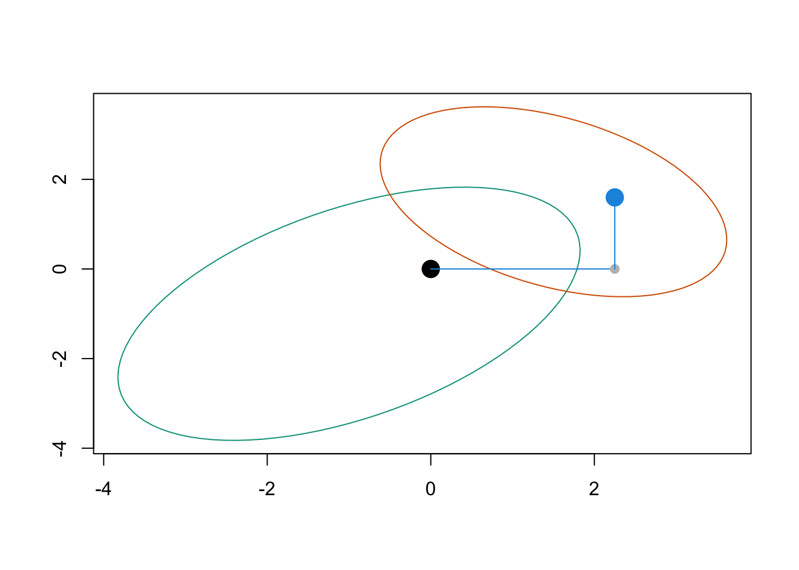
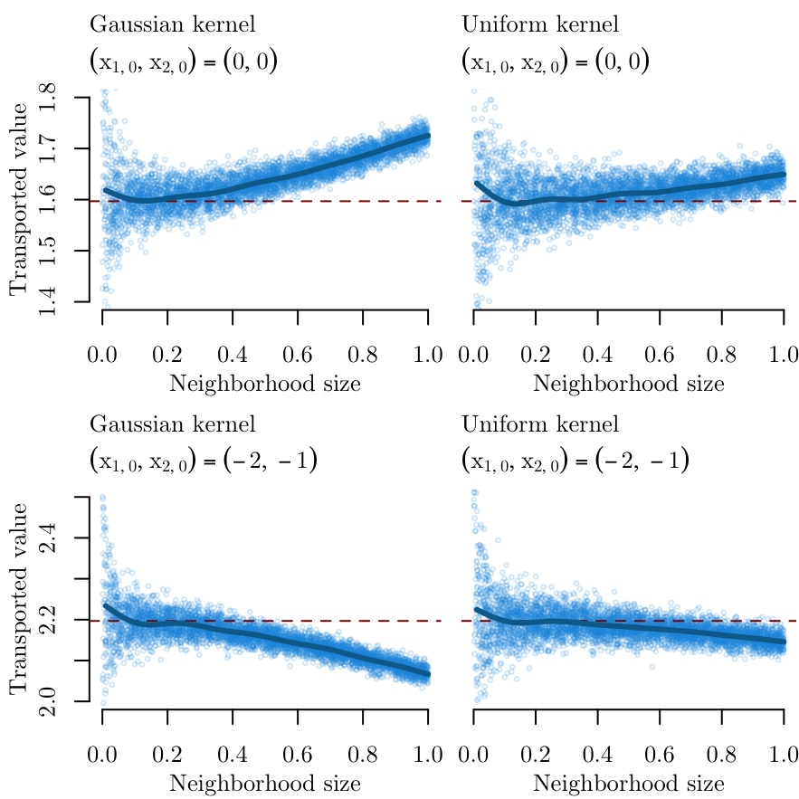

library(tidyverse)12 Gaussian Conditional Univariate Transport with Local Weights
Objectives
In this page, we show another method to performe univariate transport in the Gaussian case, using local weights. We illustrate the method with simulated data and compare the results with transported values obtained with sequential transport.
\[ \definecolor{wongBlack}{RGB}{0,0,0} \definecolor{wongGold}{RGB}{230, 159, 0} \definecolor{wongLightBlue}{RGB}{86, 180, 233} \definecolor{wongGreen}{RGB}{0, 158, 115} \definecolor{wongYellow}{RGB}{240, 228, 66} \definecolor{wongBlue}{RGB}{0, 114, 178} \definecolor{wongOrange}{RGB}{213, 94, 0} \definecolor{wongPurple}{RGB}{204, 121, 167} \definecolor{colA}{RGB}{0, 114, 178} \definecolor{colB}{RGB}{213, 94, 0} \definecolor{colC}{RGB}{204, 121, 167} \definecolor{colGpeZero}{RGB}{127, 23, 14} \definecolor{colGpeUn}{RGB}{27, 149, 224} \]
Codes for graphical parameters.
library(extrafont, quietly = TRUE)Registering fonts with RCodes for graphical parameters.
font_family <- "CMU Serif"
colours <- c("#3fb3b2", "#ffdd55","#1b95e0", "#0072B2")
source("../scripts/utils.R")
path <- "./figs/"
if (!dir.exists(path)) dir.create(path)12.1 Sequential Optimal Transport
Let \(A=\{0,1\}\) be a binary treatment. Individuals for which \(A=0\) are in group 0, those for which \(A=1\) are in group 1. Let \(\boldsymbol{X}=(X_1, X_2) | A=a\) follow a multivariate Normal distribution. We set the following means for group 0 and group 1, \(\boldsymbol{\mu}_0\) and \(\boldsymbol{\mu}_1\), respectively:
M0 <- c(-1, -1)
M1 <- c(1.5, 1.5)and the following variance-covariance matrices, \(\boldsymbol{\Sigma}_0\) and \(\boldsymbol{\Sigma}_1\):
S0 <- 4 * matrix(c(1, .5, .5, 1) * 1.2^2, 2, 2)
S1 <- 4 * matrix(c(1, -.4, -.4, 1) * .9^2, 2, 2)Set the seed for reproducibility:
set.seed(1234)We will first focus on the point \((x_{1,0} = 0, x_{2,0} =1)\) from group 0 that we want to transport in group 1.
x0 <- c(0, 0)We will proceed in a sequential way, assuming the following topological order: \(A \rightarrow X_1 \rightarrow X_2\).
First, transport \(x_{1,0}\) from group 0 to group 1. To do so, simply estimate the cumulative distribution function on the individuals in group 0 \(\widehat{F}_{1,a=0}\) and the quantile function on the individuals in group 1 \(\widehat{Q}_{1,t=1}\). The transport map is \(T_1^\star = \widehat{Q}_{1,t=1}\circ\widehat{F}_{1,t=0}\) so that the counterfactual of \(x_{1,0}\) in group 1 is \(x_{1,1}^\star=T_1^\star(x_{1,0})\).
T1x0 <- qnorm(
p = pnorm(q = x0[1], mean = M0[1], sd = sqrt(S0[1, 1])),
mean = M1[1], sd = sqrt(S1[1,1])
)Then, transport \(x_{2,0}\) conditional on \(x_{1,0}\). To do so, estimate the cumulative distribution function on individuals from group 0 \(\widehat{F}_{2,a=0}\) conditional on \(X_1=x_{1,0}\), for \(X_2\); and the quantile function on the individuals from group 1 \(\widehat{Q}_{2,t=1}\), conditional on \(X_2=x^\star_{1,0}\), for \(X_2\). The transport map is \(T_2^\star = \widehat{Q}_{2,t=1}\circ\widehat{F}_{2,t=0}\) so that the counterfactual of \(x_{2,0}\) in group 1 is \(x_{2,1}^\star=T_{2\mid1}^\star(x_{2,0})\).
m10 <- M0[2] + S0[1, 2] / S0[1, 1] * (x0[1] - M0[1])
s10 <- S0[2, 2] - S0[1, 2]^2 / S0[1, 1]
m11 <- M1[2] + S1[1, 2] / S1[1, 1] * (T1x0[1] - M1[1])
s11 <- S1[2, 2] - S1[1, 2]^2 / S1[1, 1]
T2x0 <- qnorm(
p = pnorm(q = x0[2], mean = m10, sd = sqrt(s10)),
mean = m11,
sd = sqrt(s11)
)The coordinates of the transported point are:
c(round(T1x0,4), round(T2x0,4))[1] 2.2500 1.5969We define a wraper function, transp_ot() for the previous codes, to transport an observation from group 0 to group 1 with that framework.
The transp_ot() function.
transp_ot <- function(x0) {
# First, transport X_1 from group 0 to group 1
T1x0 <- qnorm(
p = pnorm(q = x0[1], mean = M0[1], sd = sqrt(S0[1, 1])),
mean = M1[1], sd = sqrt(S1[1,1])
)
# Then, transport X_2 conditional on X_1
m10 <- M0[2] + S0[1, 2] / S0[1, 1] * (x0[1] - M0[1])
s10 <- S0[2, 2] - S0[1, 2]^2 / S0[1, 1]
m11 <- M1[2] + S1[1, 2] / S1[1, 1] * (T1x0[1] - M1[1])
s11 <- S1[2, 2] - S1[1, 2]^2 / S1[1, 1]
T2x0 <- qnorm(
p = pnorm(q = x0[2], mean = m10, sd = sqrt(s10)),
mean = m11,
sd = sqrt(s11)
)
T2x0
}Let us visualize the initial point and is transported version on a plot.
Codes to create the Figure.
# Let us display the 50% confidence ellipses for both groups
Z0 <- as.data.frame(ellipse::ellipse(S0, level = .5))
Z0 <- Z0 + rep(M0, each = nrow(Z0))
Z1 <- as.data.frame(ellipse::ellipse(S1, level = .5))
Z1 <- Z1 + rep(M1, each = nrow(Z1))
plot(
Z0, type = "l", col = colours[1],
xlim = range(c(Z0[, 1], Z1[, 1])),
ylim = range(c(Z0[, 2], Z1[, 2])),
xlab = "", ylab = ""
)
lines(Z1, type = "l", col = colours[2])
# The starting point
points(x0[1], x0[2], pch = 19, col = "black", cex = 2)
# Transport of the first component (x_1): intermediate point
segments(x0[1], x0[2], T1x0, x0[2], col = colours[3])
points(T1x0, x0[2], pch = 19, col = "gray", cex = 1)
# Transport of the second component (x_2), conditional on x_1
# The resulting point in the transported individual from group 0 to group 1.
segments(T1x0, T2x0, T1x0, x0[2], col = colours[3])
points(T1x0, T2x0, pch = 19, col = colours[3], cex = 2)
12.2 Sequential Transport using Kernel Method
Let us now transport the point using local weights.
Again, we will proceed in two steps. In a first step, we transport \(x_{1,t=0}\) from group 0 to group 1. The transport map is \(T_1^\star=\widehat{Q}_{1,t=1}\circ \widehat{F}_{1,t=0}(x)\) where \[ \widehat{F}_{1,t}(x)=\frac{1}{n_t}\sum_{i=1}^{n_t}\boldsymbol{1}(x_{1,i,t}\leq x)\text{ and }\widehat{Q}_{1,t}=\widehat{F}_{1,t}^{-1}. \]
Then, we proceed to the transport of \(x_{2,0}\) conditional on \(x_{1,0}\). The transport map is \(T_2^\star=\widehat{Q}_{2|1,t=1}\circ \widehat{F}_{2|1,t=0}(x)\) where \[ \widehat{F}_{2|1,t}(x)=\sum_{i=1}^{n_t}\omega_{i,t}\boldsymbol{1}(x_{1,i,t}\leq x)\text{ and }\widehat{Q}_{2|1,t}=\widehat{F}_{2|1,t}^{-1}. \] with \[ \omega_{i,t=0} \propto k_h(x_{1,i,t=0}-x_{1,0}) \text{ and } \omega_{i,t=1} \propto k_h(x_{1,i,t=1}-x^\star_{1,0}) \] for some kernel \(k_h\).
library(mvtnorm)
library(Hmisc)
Attaching package: 'Hmisc'The following objects are masked from 'package:dplyr':
src, summarizeThe following objects are masked from 'package:base':
format.pval, unitsWe set the seed for reproducibility:
set.seed(12345)We define a function, Transp2x0(), to transport an observation under this Gaussian framework, using either a Gaussian or a Uniform (retangular) kernel.
#' @param x0 Point to transport
#' @param n Number of observations to draw
#' @param kernel Type of kernel to use: "gaussian" for Gaussian kernel, or
#' "uniform" for rectangular (uniform) kernel.
Transp2x0 <- function(x0,
n,
kernel = c("gaussian", "uniform"),
seed = NULL) {
if (!is.null(seed)) set.seed(seed)
kernel <- match.arg(kernel)
# Parameters of the multivariate Gaussian distributions in the
# two groups
M0 <- c(-1, -1)
M1 <- c(1.5, 1.5)
S0 <- 4 * matrix(c(1, .5, .5, 1) * 1.2^2, 2, 2)
S1 <- 4 * matrix(c(1, -.4, -.4, 1) * .9^2, 2, 2)
# Bandwidth for smoothing (to be used in the Gaussian kernel weights)
h <- .0001 + runif(1)
# Drawing individuals in both groups
X0 <- mnormt::rmnorm(n, M0, S0)
X1 <- mnormt::rmnorm(n, M1, S1)
# Transport of the first coordinate
# cdf value of starting point in group 0
u <- mean(X0[, 1] <= x0[1])
# corresponding quantile level in group 1
T1x0 <- as.numeric(quantile(X1[, 1], u))
if (kernel == "gaussian") {
# Transport of the second coordinate, conditional on the first
# using kernel smoothing
# Weights based on the proximity in the first dimension
w0x0 <- dnorm(X0[, 1], x0[1], sd = h)
w0x0 <- w0x0 / sum(w0x0)
w1x0 <- dnorm(X1[, 1], T1x0, sd = h)
w1x0 <- w1x0 / sum(w1x0)
# conditional distribution of the second coordinate in group 0
# weighted by proximity in the first coordinate
} else {
# uniform (or rectangular) kernel
w0x0 <- (abs(X0[, 1] - x0[1]) < (h)) * 1
w0x0 <- w0x0 / sum(w0x0)
w1x0 <- (abs(X1[, 1] - T1x0) < h) * 1
w1x0 <- w1x0 / sum(w1x0)
}
u <- weighted.mean(X0[, 2] <= x0[2], w0x0)
# u-th weighted quantile of the second coordinate, where the weights
# reflect the closeness to T1x0
T2x0 <- Hmisc::wtd.quantile(
x = X1[, 2], weights = w1x0, probs = u, normwt = TRUE) |>
as.numeric()
c(x = h, y = T2x0)
}12.2.1 Simulations
Let us now run some simulations. We will consider two different kernels: a Gaussian, and a Uniform. We will tranpsport two points: \((x_{1,0} = 0, x_{2,0} =1)\) and \((x_{1,0} = -2, x_{2,0} = -1)\). For each case, we generate 5,000 samples from the DGP shown in Section 12.1.
# This chunk is not evaluated here. Each simulation takes about 4 minutes.
# The results of previously run simulations are loaded in this notebook.
library(pbapply)
library(parallel)
ncl <- detectCores()-1
(cl <- makeCluster(ncl))
clusterEvalQ(cl, {
library(mvtnorm)
}) |>
invisible()
n <- 1e5
n_repl <- 5000
clusterExport(cl, c("Transp2x0", "n", "n_repl"))
# Starting point: (0,0) and Gaussian kernel
res_sim_gaussian_1 <- pbapply::pblapply(
seq_len(n_repl),
function(x) Transp2x0(x0 = c(0, 0), n = n, kernel = "gaussian", seed = x),
cl = cl
)
res_sim_gaussian_1 <- do.call("rbind", res_sim_gaussian_1)
# Starting point: (0,0) and uniform kernel
res_sim_uniform_1 <- pbapply::pblapply(
seq_len(n_repl),
function(x) Transp2x0(x0 = c(0, 0), n = n, kernel = "uniform", seed = x),
cl = cl
)
res_sim_uniform_1 <- do.call("rbind", res_sim_uniform_1)
# Starting point: (-2,1) and Gaussian kernel
res_sim_gaussian_2 <- pbapply::pblapply(
seq_len(n_repl),
function(x) Transp2x0(x0 = c(-2, -1), n = n, kernel = "gaussian", seed = x),
cl = cl
)
res_sim_gaussian_2 <- do.call("rbind", res_sim_gaussian_2)
# Starting point: (-2,1) and uniform kernel
res_sim_uniform_2 <- pbapply::pblapply(
seq_len(n_repl),
function(x) Transp2x0(x0 = c(-2, -1), n = n, kernel = "uniform", seed = x),
cl = cl
)
res_sim_uniform_2 <- do.call("rbind", res_sim_uniform_2)
stopCluster(cl)
save(
res_sim_gaussian_1,
res_sim_gaussian_2,
res_sim_uniform_1,
res_sim_uniform_2,
file = "../output/simyot-loc-weights.rda"
)We load the results:
load("../output/simyot-loc-weights.rda")12.2.1.1 Results
We can visualize the results. In Figure 12.1 we can visualize \(x_{2|1,0}^\star\) (on the \(y\)-axis) when \((x_{1,0},x_{2,0})=(0,0)\) (on top) and when \((x_{1,0},x_{2,0})=(-2,-1)\) (below) using simulated Gaussian samples, for two choices of kernels (Gaussian on the left, uniform on the right). The horizontal dashed line indicates the transported value from standard optimal transport (as in Section 12.1).
Codes to create the Figure
export_tikz <- FALSE
library(tikzDevice)
library(mgcv)
f_plot <- function(res_sim,
kernel,
x0,
ylim = NULL,
tikz = FALSE,
draw_y_axis = TRUE) {
plot(
res_sim[, 1], res_sim[, 2],
# V[1,], V[2,],
cex = .4, col = scales::alpha(colours[3], .2),
xlab = "",
ylab = "",
main = "",
ylim = ylim,
family = font_family,
axes = FALSE
)
axis(1, family = font_family)
if (draw_y_axis) axis(2, family = font_family)
title(
main = paste(kernel, "kernel"),
family = font_family,
adj = 0,
line = 2,
cex.main = 1
)
sub_title <- paste0(
"$(x_{1,0}, x_{2,0}) = (",
paste(x0, collapse = ", "), ")$"
)
if (tikz == FALSE) sub_title <- latex2exp::TeX(sub_title)
title(
main = sub_title,
family = font_family,
adj = 0,
line = 1,
cex.main = 1,
)
title(
xlab = "Neighborhood size",
ylab = "Transported value",
line = 2,
family = font_family
)
T2x0 <- transp_ot(x0)
# Result obtained sequential transport
abline(h = T2x0, lty=2, col="darkred")
# Smooth line of the transported values obtained with the kernel approach
base <- data.frame(x = res_sim[, 1], y = res_sim[, 2])
reg <- mgcv::gam(y ~ s(x), data = base)
nbase <- data.frame(x = (1:100) / 100)
p <- predict(reg, newdata = nbase, type = "link", se.fit = TRUE)
lines(nbase$x, p$fit, col = colours[4], lwd = 3)
}
path <- "./figs/"
file_name <- "gaussian-ot-local-weights"
if (export_tikz == TRUE)
tikz(paste0("figs/", file_name, ".tex"), width = 2.75, height = 2.75)
layout(matrix(1:4, ncol = 2, byrow = TRUE), width = c(1, .8))
par(mar = c(3.1, 3.1, 3.1, .1))
f_plot(
res_sim_gaussian_1,
kernel = "Gaussian", x0 = c(0, 0), ylim = c(1.4, 1.8), tikz = export_tikz
)
par(mar = c(3.1, .6, 3.1, .1))
f_plot(
res_sim_uniform_1,
kernel = "Uniform", x0 = c(0, 0), ylim = c(1.4, 1.8), tikz = export_tikz,
draw_y_axis = FALSE
)
par(mar = c(3.1, 3.1, 3.1, .1))
f_plot(
res_sim_gaussian_2,
kernel = "Gaussian", x0 = c(-2, -1), ylim = c(2, 2.5), tikz = export_tikz
)
par(mar = c(3.1, .6, 3.1, .1))
f_plot(
res_sim_uniform_2,
kernel = "Uniform", x0 = c(-2, -1), ylim = c(2, 2.5), tikz = export_tikz,
draw_y_axis = FALSE
)
if (export_tikz == TRUE) {
dev.off()
plot_to_pdf(filename = file_name, path = path, keep_tex = FALSE, crop = FALSE)
}
